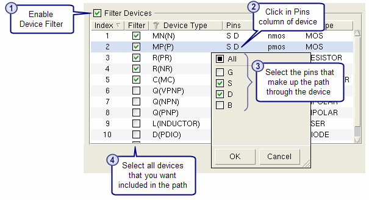

Search and Selection Filters in the Finder Tab
Access with: View > Finder, then expand the “Finder Filters” area.
Search and selection filters are available for some types of search in the Finder tab. Layer, device, and window (region) filters are available. Where appropriate, the specified filters also apply when selecting items in an attached viewer to fill in a GUI field. In some cases the filters apply when expanding nodes in the search results.
Description
Search filters for the Finder Tab are saved when you exit Calibre RVE for LVS, and restored the next time you open Calibre RVE. The filter icon is blue when a filter is applied, and a pop-up notice in the lower right corner informs you that a filter is applied the first time you click Find with a filter applied.
Objects
- Filter Layers
The layer filter is applied when searching for nets using wildcards (* and ?). When the layer filter is enabled, nets on layers that are included in the layer filter are searched for. The use of wildcards is supported for the “Particular Objects” search in the layout only, and the use of wildcards extends the search time. Wildcards are not supported for searches in the source.
The layer filter also applies when viewing the “Ports on net” node for a net search result. For example, if the layer filter selects the Metal1 layer only, the “Ports on net > Show all ports” node lists only ports on the Metal1 layer. In some cases the port layer is not listed in the layer list for the layer filter, with the result that all ports are filtered out if a layer filter is applied.
For the “Isolate Path on Layout Net” search, the layer filter applies when selecting path endpoints in the layout viewer. It also applies to the search results—only results from the selected layers are displayed.
- Filter Windows
When a window filter is enabled, the search for nets is limited to the specified area. A similar window filter is used for the Highlights Tab; see “Window Filters on the Highlights Tab” for an explanation of the window filter controls. The “Viewing Cell” field is given by the “Search in which cell?” field when the window filter is applied to searches.
- Filter Devices
The device filter is applied when searching for device names using wildcards (* and ?) and when performing a “Find Path” search. When the device filter is enabled, the search is limited to the device types specified in the filter. The use of wildcards extends the search time. Wildcards are not supported for searches in the source.
- Select default devices
Right-click in the Filter Devices table and choose Select Common Devices. This selects the MP, MN, MD, ME, R, C, LDD, LDDD, LDDM, and LDDP device types.
When the search type is “Find Path”, you can use the device filter to specify the pins that make up the path through devices. See the “Usage Notes” section in this topic.
The device filter also applies when viewing the “Devices on net” node for a net search result. For example, if the device filter selects MN(N) devices only, the “Devices on net > Show all devices” node lists only MN(N) devices and filters out all other device types
- Apply Finder Filters while highlighting
Select this option to use the search and selection filters on the Finder tab when highlighting objects. The following are true if this option is enabled:
The is Highlights Tab disabled.
The option “Skip contact/via layers while highlighting” can be set on the
 Options tab
in the Highlighting category in the “Layout
Highlighting” expandable section.
Options tab
in the Highlighting category in the “Layout
Highlighting” expandable section.
The setting for “Apply Finder Filters while highlighting” on the Finder tab is not saved when you exit Calibre RVE.
Usage Notes
Specify pins for path in “Find Path” search — When the search type is “Find Path”, you can use the device filter to specify the pins that make up the path through devices.
To specify the pins, expand the “Finder Filters” area in the Finder tab, and enable “Filter Devices.” Click in the Pins column for a device to select the pins that are part of the path, as shown in the following figure. Be sure that all devices you want included in the path are selected with the checkbox in the Filter column.
Figure 1. Specify Pins for Find Path Search